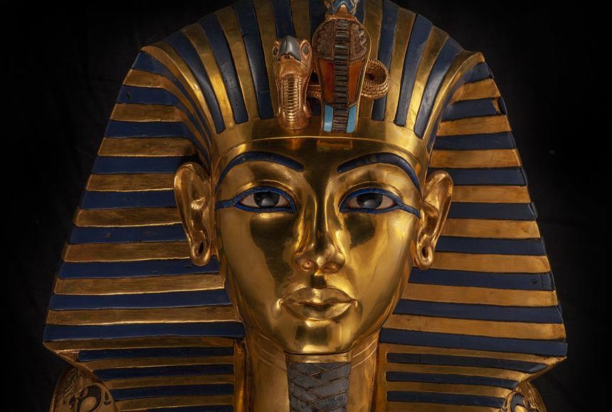
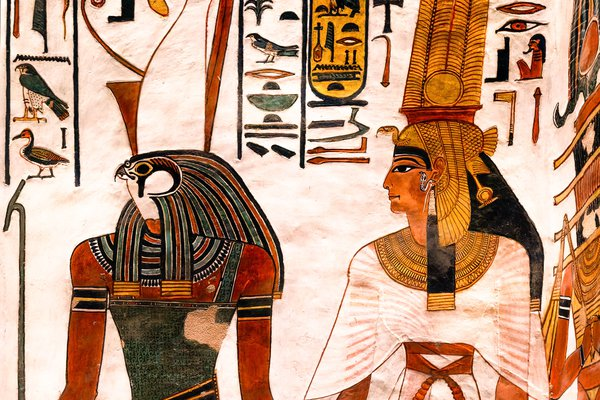

Introduction to the Land of Egypt


Egypt, officially the Arab Republic of Egypt, is a
transcontinental country spanning the northeast corner of Africa and the
Sinai Peninsula in the southwest corner of Asia. It is bordered by the
Mediterranean Sea to the north, the Gaza Strip of Palestine and Israel to
the northeast, the Red Sea to the east, Sudan to the south, and Libya to
the west. The Gulf of Aqaba in the northeast separates Egypt from Jordan
and Saudi Arabia. Cairo is the capital and largest city of Egypt, while
Alexandria, the second-largest city, is an important industrial and
tourist hub at the Mediterranean coast. At approximately 100 million
inhabitants, Egypt is the 14th-most populated country in the world, and
the third-most populated in Africa, behind Nigeria and Ethiopia. Egypt
has one of the longest histories of any country, tracing its heritage
along the Nile Delta back to the 6th–4th millennia BCE. Considered a
cradle of civilisation, Ancient Egypt saw some of the earliest developments
of writing, agriculture, urbanisation, organised religion and central government.
Egypt's long and rich cultural heritage is an integral part of its national
identity, which reflects its unique transcontinental location being
simultaneously Mediterranean, Middle Eastern and North African.
Learn more
Exploring Egypt's Geography

Without the Nile River, all of Egypt would be desert. Only about an inch
(2.5 centimeters) of rain falls throughout Egypt each year. But each
summer, the river rises because of rains at its source far to the south in
Ethiopia. Floods cover the river's valleys, leaving sediments needed for
trees, plants, and crops to grow. Egypt is often divided into two
sections: Upper Egypt in the south and Lower Egypt in the north. The
sections are named this way because the Nile flows from south to north.
The river empties into the Mediterranean Sea. Southern Egypt's landscape
contains low mountains and desert. Northern Egypt has wide valleys near
the Nile and desert to the east and west. North of Cairo, the capital, is
the sprawling, triangular Nile River Delta. This fertile land is
completely covered with farms.
About 90 percent of Egyptians are Muslim, which means they are
followers of the Islamic religion. About 10 percent of Egyptians are
Copts, one of the oldest branches of the Christian religion. Egypt's
population is growing rapidly. This puts strains on Egypt's resources,
since most people live in a narrow strip of land along the Nile River.
Having so many people in such a small area can cause overcrowding, from
schools to apartment buildings to hospitals. Children are highly valued in
Egypt, especially in rural areas where they help on family farms. Children
are also expected to look after their parents in their old age.
An Overview of Egypt's Past


The first people to live on the banks of the Nile were hunters and
fishermen, who settled there over 8,000 years ago. They learned to grow
crops and raise animals, and they began to build villages and towns. They
traded with their neighbors and learned to sail boats. By 3000 B.C., a
civilization was established. Around 3100 B.C., the kingdoms of Upper and
Lower Egypt were unified under a powerful king, later called a pharaoh.
These kings built huge pyramids, temples, and other monuments. They also
conquered other lands. By 1000 B.C., Egypt had split into smaller parts
and the kingdom was in decline. Strong neighbors attacked and took over
Egyptian territory. In 31 B.C., Egypt fell under Roman control. In A.D.
640, Muslim warriors took over Egypt and founded the modern capital,
Cairo. They ruled for several centuries.
In the 16th century, Egypt became part of the Ottoman Turkish
Empire. European powers played an increasing role in Egypt starting in the
late 18th century. In 1882, the British invaded and occupied Egypt. The
British wanted control of the Suez Canal, which linked the Mediterranean
Sea with the Red Sea and greatly shortened the sailing trip from Asia to
Europe. Egypt gained full independence from Great Britain in 1952 and took
control of the Suez Canal in 1956. Egypt and other neighboring Arab
countries fought a series of wars with the Jewish state of Israel into the
1970s. In 1979 Egypt and Israel signed a peace agreement. In 2011, a
popular uprising toppled Egypt's long-time president, Hosni Mubarek. The
country has held several democratic elections since 2011, but the role of
the military in government remains strong.
Learn more